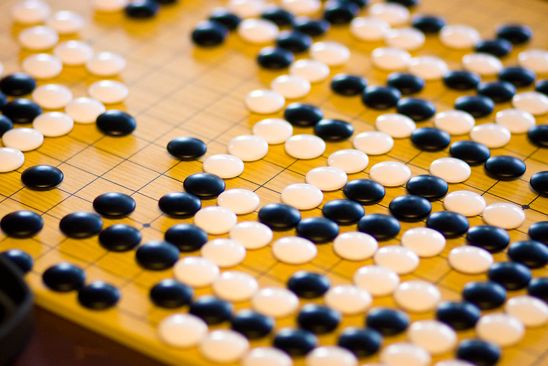
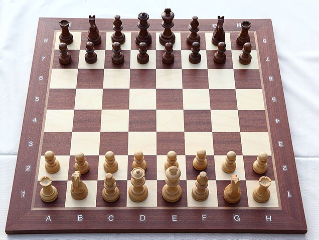
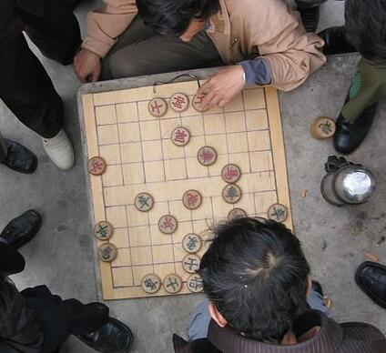

Board Games at Peckham Pelican
Friendly games and study group of traditional board games. Calendar
What
Go also known as Baduk 바둑 in Korean, Igo 囲碁 in Japanese or Weiqi 围棋 in Chinese
 is an abstract strategy board game for two players in which the aim is to surround more territory than the opponent. The game was invented in China more than 2,500 years ago and is believed to be the oldest board game continuously played to the present day. Wikipedia
We play games on 9x9, 13x13 and 19x19 board, replay profesional games or solve tsumego-s.
Chess or Шахматы in Russian or Šach in Slovak :)

The current form of the game emerged in Southern Europe during
the second half of the 15th century after evolving from a
similar, much older game of Indian origin.
Today, chess is one of the world's most popular games, played by millions
of people worldwide.
Wikipedia
Elephant Chess also known as Chinese Chess or Xiangqi 象棋 in Chinese
 The game represents a battle between two armies, with the object of capturing the enemy's general (king). Distinctive features of xiangqi include the cannon (pao), which must jump to capture; a rule prohibiting the generals from facing each other directly; areas on the board called the river and palace, which restrict the movement of some pieces (but enhance that of others); and placement of the pieces on the intersections of the board lines, rather than within the squares.
Besides China and areas with significant ethnic Chinese communities, xiangqi is also a popular pastime in Vietnam, where it is known as cờ tướng. Wikipedia
When
Every Sunday from 14pm until 18pm closing time
unless other program at the venue or unforeseen events.
Please check our calendar
for up-to date schedule and upcoming sessions.
The venue opens at 11am and offers range of tasty foods and drinks for friendly prices so feel free to come earlier to enjoy the lunch and then stay for game or two :)
Where
Peckham Pelican, Cafe - Bar
at the border of Camberwell and Peckham in South East (SE) London.
Open Street Map,
Google Map.
Contact Form
If you have any questions or message please do not hesitate use above contact form.
Copyrights and Credits
Xiangqi and
Chess
ilustration photos are from Wikimedia
Pelican Photos taken from Facebook page
Baduk Board by arland on Flickr
{kind=link}
{kind=link}